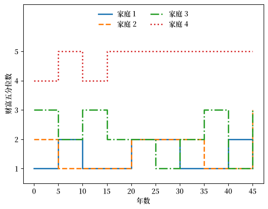
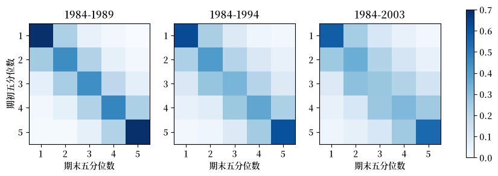
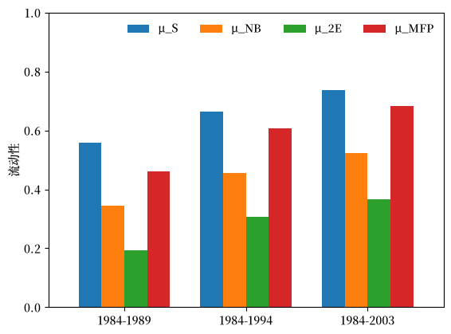
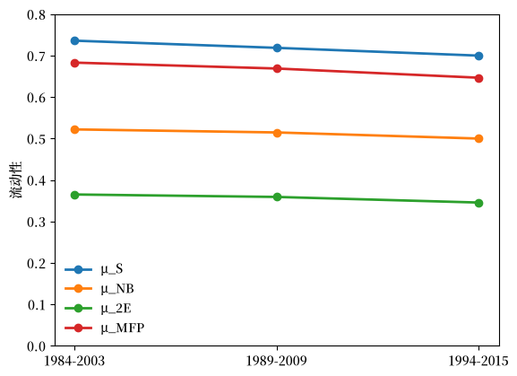

44. 测量流动性#
除 Anaconda 中已有的库外，本讲座还需要以下库：
!pip install quantecon
44.1. 概览#
在 收入与财富不平等 中，我们衡量了在某一时间点收入和财富分布的不平等程度。
这类衡量方式是一种快照。
虽然它们确实能提供关于富人和穷人之间差距有多大的信息，但它们无法告诉我们同样的家庭是否一直保持贫穷或富有。
这一点很重要，因为两个经济体可以拥有完全相同的洛伦兹曲线和完全相同的基尼系数，但却为其公民提供完全不同的人生前景。
例如，假设我们正在比较两个财富分布完全相同的经济体。
进一步假设它们属于以下两种情况之一。
出生时地位就已固定，且永不改变。
家庭地位不断起伏，今天的穷困家庭很有可能是明天的富裕家庭。
这两个经济体之间的差异就是流动性：家庭在分布中改变地位的速率。
流动性对政策至关重要。
对再分配、税收的态度，以及我们对一个经济体能提供多少机会的判断，都取决于流动性。
在本讲座中，我们研究当数据以财富分位数之间的转移矩阵形式呈现时，如何测量流动性。
这是 马尔科夫链：基本概念 和 马尔科夫链：不可约性与遍历性 中所发展的马尔可夫链理论的一个自然应用，也让我们再次用到了 佩龙-弗罗贝尼乌斯定理。
Note
本讲座大量借鉴了 Daniel Carroll、Nicholas Hoffman 和 Eric R. Young 所著论文 “Mobility” [Carroll et al., 2026] 的前几节内容。
该论文将标准的流动性度量汇总在一处，将其应用于美国财富数据，然后探讨主力宏观经济模型能否重现其发现的结果。
让我们先导入一些库。
import matplotlib.pyplot as plt
import numpy as np
import pandas as pd
import quantecon as qe
import matplotlib as mpl
FONTPATH = "fonts/SourceHanSerifSC-SemiBold.otf"
mpl.font_manager.fontManager.addfont(FONTPATH)
plt.rcParams['font.family'] = ['Source Han Serif SC', 'DejaVu Sans']
np.set_printoptions(legacy='1.25') # print scalars as plain numbers
44.2. 流动性矩阵#
44.2.1. 从分位数到随机矩阵#
假设我们在两个日期 \(s\) 和 \(s + t\) 观测大量家庭的财富。
我们在每个日期按财富对家庭排序，并将其分为 \(N\) 个等规模的组，即分位数。
（在观察数据时，我们常常考虑 \(N = 5\) 的情形，此时这些分位数即为五分位数，每组包含 20% 的家庭。）
现在我们询问，对每个家庭而言，它在起始时属于哪个分位数，结束时又属于哪个分位数。
对所有家庭取平均，就得到一个矩阵 \(M\)，其典型元素为
\(M\) 的每一行都是一个概率质量函数，因此按照 马尔科夫链：基本概念 中的定义，\(M\) 是一个随机矩阵。
我们称 \(M\) 为流动性矩阵。
有两点值得强调。
第一，\(M\) 描述的是相对流动性：它记录的是家庭之间相对位置的变动，而不是财富本身的增长。
在这个定义下，一个人人财富都翻倍的经济体是完全没有流动性的。
第二，该链的时间单位是视界 \(t\)，可能是五年，也可能是二十年。
这一选择会对结果产生很大影响，我们在查看数据时会再次讨论这一点。
44.2.2. 一个例子#
以下是根据美国 1984 年至 1989 年这五年间的数据估计出的一个流动性矩阵，我们将在 后面的一节 中更详细地讨论它。
M_ex = [[0.70, 0.23, 0.05, 0.02, 0.00],
[0.25, 0.45, 0.22, 0.06, 0.02],
[0.06, 0.24, 0.44, 0.19, 0.06],
[0.02, 0.06, 0.22, 0.47, 0.23],
[0.01, 0.01, 0.06, 0.22, 0.70]]
这些数字发表时保留两位小数，因此各行加总起来并不完全等于一。
我们需要它们完全等于一，因此让我们写一个辅助函数来重新缩放每一行。
def normalize_rows(M):
M = np.asarray(M, dtype=float)
return M / M.sum(axis=1, keepdims=True)
M_ex = normalize_rows(M_ex)
第一行表明，1984 年处于最贫穷五分位数的家庭，到 1989 年仍留在原处的概率为 70%，向上移动一个五分位数的概率为 23%，而到达最顶层的概率为零。
概率质量集中在对角线附近，两个极端的五分位数最为”黏滞”。
为使这一点更加具体，让我们模拟几个家庭的五分位数变化历程。
findfont: Failed to find font weight normal, now using 600.
findfont: Failed to find font weight normal, now using 600.
{kind=link}

Fig. 44.1 四个家庭的模拟五分位数路径#
有些家庭走得很远，有些家庭几乎原地不动。
我们的任务就是用一个单一的数字来概括这种行为。
44.2.3. 两个基准#
在选择度量方法之前，先确定任何度量方法都应参照的两个极端情形会有所帮助。
完全不流动对应于单位矩阵 \(M = I\)。
每个家庭永远停留在其起始位置。
完全流动对应于每个元素都等于 \(1/N\) 的矩阵，
其中 \(\mathbb 1\) 是一个 \(N \times 1\) 的全一向量。
在这里，结束时的分位数与起始时的分位数无关，因此知道一个家庭起始位置对我们判断其最终归宿毫无帮助。
这一性质被称为起点独立性，它是流动性的自然上限参照点：分布在每一步都被彻底重新洗牌。
你或许会反对说，\(M^*\) 并非唯一具有该性质的矩阵。
事实上，只要 \(M\) 的每一行都相同，即 \(M = \mathbb 1 \psi^\top\)（其中 \(\psi\) 为某概率质量函数），结束时的分位数就与起始分位数无关。
那么为何单单挑出均匀分布的情形，将其称为完全流动呢？
原因在于，我们构造的分位数在两个日期都包含相同数量的家庭。
结束时落入分位数 \(j\) 的家庭比例为 \(\sum_i (1/N) m_{ij}\)，这必须等于 \(1/N\)，因此
换言之，一个基于等规模分位数构建的流动性矩阵，其列加总（与行加总一样）也等于一——它是双随机的。
现在假设这样一个矩阵还具有相同的行，即 \(M = \mathbb 1 \psi^\top\)。
其第 \(j\) 列加总为 \(N \psi(j)\)，令其等于一即得 \(\psi(j) = 1/N\)。
因此，\(M^*\) 并非众多起点独立矩阵中的一个——在这种设定下，它是唯一的一个。
N = 5
M_immobile = np.identity(N)
M_perfect = np.ones((N, N)) / N
一个好的流动性度量应该在 \(M_{\text{immobile}}\) 处返回 0，在 \(M_{\text{perfect}}\) 处返回 1。
我们将看到，下面所有四种度量都是按照这一原则构造的。
Note
高于 1 的取值是可能出现的，并且具有实际意义。
当一个链系统性地反转排名时就会出现这种情况——例如，一个以概率一将最贫穷五分位数送到最富裕位置的矩阵，其带来的移动比纯粹的随机机会更多。
因此，1 标志着起点独立性，而非上限。
这种系统性反转在普通市场经济中并不常见，因为财富具有持续性，估计出的流动性矩阵大部分概率质量都落在对角线上或其附近。
我们下面研究的所有实证矩阵得分都远低于 1。
44.3. 四种流动性度量#
将一个 \(N \times N\) 矩阵简化为一个单一数字会丢失信息。
不同的度量方法舍弃了不同的信息，这正是通常做法要报告多个度量值的原因。
我们遵循 [Carroll et al., 2026] 的做法，考虑四种度量，每一种都在 [Dardanoni, 1993] 中有详细讨论。
44.3.1. Shorrocks 指数#
[Shorrocks, 1978] 提出的度量只关注 \(M\) 的对角线，
其思路是：\(m_{ii}\) 是分位数 \(i\) 中家庭留在原地的概率，因此 \(1 - m_{ii}\) 就是其逃离原地的概率。
将 (44.1) 改写为
可以看出，\(\mu_S\) 是平均逃离概率，除以完全流动情形下的逃离概率 \((N-1)/N\)。
从这个意义上说，\(\mu_S\) 衡量的是初始条件相对于起点独立性而言的黏滞程度。
def shorrocks(M):
N = len(M)
return (N - np.trace(M)) / (N - 1)
shorrocks(M_immobile), shorrocks(M_perfect)
(0.0, 1.0)
该度量完全无视概率在对角线之外的分布方式。
一个家庭一步之内从赤贫变成巨富的经济体，与一个贫困家庭只是略微不那么贫困的经济体，只要它们离开起始分位数的频率相同，得分就会相同。
44.3.2. Bartholomew 度量#
[Bartholomew, 1967] 提出的度量则采取相反的视角，只关注非对角线元素，
权重 \(|i-j|\) 是跨越的分位数边界数，因此跨越多个分位数的转移比转移到相邻分位数计入更多的权重。
除去因子 \(1/(N-1)\)，这就是每期一个家庭跨越的分位数的期望数量。
[Fields and Ok, 1999] 将 \(\mu_B\) 描述为对总移动量的度量。
def bartholomew(M):
N = len(M)
i, j = np.indices((N, N))
return np.sum(M * np.abs(i - j)) / (N - 1)
bartholomew(M_immobile), bartholomew(M_perfect)
(0.0, 2.0)
请注意，\(\mu_B\) 的标定方式与 \(\mu_S\) 不同：完全流动时给出的值是 2 而非 1。
事实上，利用 \(\sum_{i,j} |i-j| = N(N-1)(N+1)/3\) 稍作计算即可得到
因此，为了让 Bartholomew 度量与其他度量处于同一标准，我们进行重新缩放，
即跨越的分位数期望数量与起点独立情形下跨越数量的相对值。
def bartholomew_normalized(M):
N = len(M)
return 3 * bartholomew(M) / (N + 1)
bartholomew_normalized(M_immobile), bartholomew_normalized(M_perfect)
(0.0, 1.0)
当我们想要”每期跨越的分位数”这一解释时报告 \(\mu_B\)，而在与其他度量进行比较时报告 \(\mu_{NB}\)。
44.3.3. 第二特征值#
我们的第三种度量来自收敛理论，而非转移次数的统计。
回想一下 马尔科夫链：基本概念 中的内容：当 \(M\) 处处为正时，分布 \(\psi_t = \psi_0 M^t\) 收敛于平稳分布 \(\psi^*\)。
佩龙-弗罗贝尼乌斯定理 告诉我们，随机矩阵的最大特征值为 \(\lambda_1 = 1\)，而 \(\psi_t \to \psi^*\) 的速率则由第二大特征值 \(\lambda_2\) 的模决定。
一个混合得快的链会很快忘记其初始条件，这正是流动性的含义所在。
这启发我们定义
[Sommers and Conlisk, 1979] 证明了 \(\mu_{2E}\) 度量的是 \(M\) 相对于完全流动矩阵的总体偏离程度。
def second_eigenvalue(M):
λ = np.sort(np.abs(np.linalg.eigvals(M)))[::-1]
return 1 - λ[1]
second_eigenvalue(M_immobile), second_eigenvalue(M_perfect)
(0.0, 1.0)
单位矩阵的 \(\lambda_2 = 1\)，永远不会混合，而 \(M^*\) 的 \(\lambda_2 = 0\)，一步即可完成混合。
这一度量还有一个额外的吸引力：对于两状态链而言，\(|\lambda_2|\) 恰好等于该过程的自相关系数，这一点将在下面的 一道练习 中要求你验证。
44.3.4. 平均首达时间#
最后一种度量提出的是关于等待时间的问题：一个家庭需要多长时间才能到达某个给定的分位数？
设 \(T_{ij}\) 为从分位数 \(i\) 出发的家庭首次到达分位数 \(j\) 所需的期望期数。
为了计算它，我们使用一步分析法：我们以链下一步的去向为条件，然后利用从那里出发的问题与原问题形式相同这一事实。
固定目标 \(j\)，取任意起始分位数 \(i \neq j\)。
家庭走一步，无论落到何处，都会消耗一期时间。
这一步以概率 \(m_{ik}\) 到达分位数 \(k\)，此时有两种可能。
若 \(k = j\)，家庭已到达，无需再花时间。
若 \(k \neq j\)，家庭仍需从 \(k\) 前往 \(j\)，这段剩余旅程的期望时间为 \(T_{kj}\)。
第二种情形正是马尔可夫性质发挥作用之处：从 \(k\) 出发的旅程需要多久只取决于 \(k\)，而与我们是经由 \(i\) 到达 \(k\) 这一事实无关。
对可能的第一步取平均，得到
中间那一项为零，因此我们得到
注意，求和中省略了 \(k = j\) 的情形，并非因为这种情况不可能发生，而是因为一旦家庭到达，它就不再产生任何贡献。
这里是最简单的检验方式。
考虑 马尔科夫链：基本概念 中的两状态链，其中失业工人每月以概率 \(\alpha\) 找到工作，设 \(i\) 为失业状态，\(j\) 为就业状态。
求和中唯一的项是 \(k = i\)，此时 \(m_{ii} = 1 - \alpha\)，因此 (44.5) 变为 \(T_{ij} = 1 + (1 - \alpha) T_{ij}\)，由此得到 \(T_{ij} = 1/\alpha\)。
这正是正确的结果，因为等待时间是成功概率为 \(\alpha\) 的几何分布。
现在固定 \(j\)，将 (44.5) 视为关于 \(N-1\) 个未知量 \(\{T_{ij}\}_{i \neq j}\) 的 \(N-1\) 个方程组成的方程组。
用 \(t\) 表示这些未知量组成的向量，\(M_{-j}\) 表示删去第 \(j\) 行和第 \(j\) 列后的 \(M\)，则该方程组为
这是一个线性求解问题，也正是下面的代码对每个 \(j\) 依次执行的操作。
在对角线上，我们使用到 \(j\) 的平均返回时间。
根据 马尔科夫链：不可约性与遍历性 中的遍历性结果，一个不可约链在分位数 \(j\) 中所花时间的比例为 \(\psi^*(j)\)，因此对 \(j\) 的访问平均每 \(1/\psi^*(j)\) 期发生一次，由此得到 \(T_{jj} = 1/\psi^*(j)\)。
def mean_first_passage(M):
"""
Mean first passage matrix T, where T[i, j] is the expected number of
periods to reach quantile j starting from quantile i.
The diagonal holds mean return times.
"""
N = len(M)
ψ_star = qe.MarkovChain(M).stationary_distributions[0]
T = np.zeros((N, N))
for j in range(N):
idx = [i for i in range(N) if i != j]
A = np.identity(N - 1) - M[np.ix_(idx, idx)]
T[idx, j] = np.linalg.solve(A, np.ones(N - 1))
T[j, j] = 1 / ψ_star[j]
return T
np.round(mean_first_passage(M_ex), 1)
array([[ 4.4, 5.3, 9.2, 14.4, 22.8],
[10.1, 4.9, 7.1, 12.3, 20.6],
[14.3, 7.5, 5.2, 9.4, 17.5],
[17.3, 10.8, 6.9, 5.5, 12.4],
[19.2, 13. , 9. , 6.1, 5.2]])
看右上角的元素，从最贫穷五分位数出发的家庭，要等大约 23 期才能首次到达最富裕五分位数。
由于这里的一期是五年，那意味着要等一个多世纪。
为了得到一个单一数字，[Conlisk, 1990] 建议对随机抽取的一对家庭取 \(T\) 的平均值。
由于各分位数包含相同数量的家庭，相关的权重为 \(\psi = (1/N, \ldots, 1/N)\)，因此
即为一个家庭到达另一随机抽取家庭所在分位数所需的期望期数。
在完全流动情形下 \(\text{MFP}(M^*) = N\)，因此归一化的度量为
其单位为每期分位数数。
def mfp_measure(M):
N = len(M)
ψ = np.ones(N) / N
return N / (ψ @ mean_first_passage(M) @ ψ)
mfp_measure(M_perfect)
1.0
与其他三种度量不同，这一度量要求不可约性。
如果某个分位数无法从另一个分位数到达，那么期望等待时间为无穷大，\(\mu_{MFP} = 0\)，无论矩阵其他地方发生多少移动都是如此。
Note
[Meyer, 1978] 给出了 \(T\) 的一个基于分块矩阵求逆的闭式表达式，这正是 [Carroll et al., 2026] 所使用的方法。
(44.5) 中的一步分析法与之等价，且更易于记忆。
44.3.5. 汇总各项度量#
让我们把这四种度量汇总到一个函数中。
def mobility_measures(M):
"Return the four mobility measures for stochastic matrix M."
return pd.Series({'μ_S': shorrocks(M),
'μ_B': bartholomew(M),
'μ_NB': bartholomew_normalized(M),
'μ_2E': second_eigenvalue(M),
'μ_MFP': mfp_measure(M)})
def mobility_table(matrices):
"Apply the measures to a dict of labelled stochastic matrices."
return pd.DataFrame({k: mobility_measures(M)
for k, M in matrices.items()}).T
由于单位矩阵是可约的，我们只单独检验完全流动这一基准。
mobility_table({'perfect mobility': M_perfect}).round(3)
| μ_S | μ_B | μ_NB | μ_2E | μ_MFP | |
|---|---|---|---|---|---|
| perfect mobility | 1.0 | 2.0 | 1.0 | 1.0 | 1.0 |
除未归一化的 \(\mu_B\) 之外，其余所有度量都等于一。
44.4. 这些度量遗漏了什么#
每种度量都会舍弃信息，而查明这一点最简洁的方式，是找出某种度量无法区分的矩阵。
以下例子改编自 [Carroll et al., 2026] 附录 A.1，并做了轻微扰动，使三条链都具有不可约性。
考虑三个具有三个财富三分位数的经济体。
ladder = np.array([[0.50, 0.50, 0.00],
[0.25, 0.50, 0.25],
[0.00, 0.50, 0.50]])
jumper = np.array([[0.50, 0.10, 0.40],
[0.25, 0.50, 0.25],
[0.40, 0.10, 0.50]])
sticky = np.array([[0.70, 0.10, 0.20],
[0.25, 0.50, 0.25],
[0.20, 0.10, 0.70]])
在阶梯经济体中，家庭只能移动到相邻的三分位数，因此穷人必须经过中产阶层才能变富。
在跳跃经济体中，家庭离开其三分位数的频率相同，但当他们移动时，通常会一步到位。
在黏滞经济体中，家庭移动很少，但一旦移动，往往会移动很远。
mobility_table({'ladder': ladder,
'jumper': jumper,
'sticky': sticky}).round(3)
| μ_S | μ_B | μ_NB | μ_2E | μ_MFP | |
|---|---|---|---|---|---|
| ladder | 0.75 | 0.75 | 0.562 | 0.5 | 0.643 |
| jumper | 0.75 | 1.15 | 0.862 | 0.6 | 0.631 |
| sticky | 0.55 | 0.75 | 0.562 | 0.5 | 0.549 |
由此可得三点启示。
阶梯经济体和跳跃经济体的 Shorrocks 指数相同，因为它们的对角线相同。
Shorrocks 指数无法看出一个经济体一步就能把家庭从底层送到顶层，而另一个需要两步。
阶梯经济体和黏滞经济体的 Bartholomew 度量相同，因为黏滞经济体中额外的移动距离恰好抵消了其较低的移动频率。
Bartholomew 度量无法区分频繁的小幅移动与罕见的大幅移动。
阶梯经济体和黏滞经济体的第二特征值也相等。
最引人注目的是，这些度量在排序上出现分歧。
Bartholomew 度量和第二特征值都将跳跃经济体排在阶梯经济体之上，认为其流动性更高，而平均首达时间则将其排为流动性略低。
原因在于，跳跃经济体中想要到达中间三分位数的家庭必须等待很长时间，因为几乎所有的移动都发生在两个极端之间。
简而言之，流动性矩阵之间并不存在完整的排序，而任何单一指数都是通过强行规定来施加一种排序。
这正是 [Fields and Ok, 1999] 和 [Dardanoni, 1993] 所要传达的核心信息，也是我们报告四个数字而非一个数字的原因。
44.5. 美国数据中的财富流动性#
44.5.1. 数据#
现在我们转向 [Carroll et al., 2026] 根据收入动态追踪调查（PSID）估计出的财富流动性矩阵。
PSID 对同一批家庭进行长期跟踪，并在 1984 年至 2015 年间以不定期间隔加入财富附加调查。
对每一对调查年份，家庭在起始年和结束年都会按财富被分入五分位数，从分位数 \(i\) 移动到分位数 \(j\) 的比例被记录下来。
作者报告了三种视界下的矩阵：短期（5–6 年）、中期（9–10 年）和长期（19–21 年）。
我们先从三个具有相同起始年份 1984 年的视界开始。
psid = {}
psid['1984-1989'] = [[0.70, 0.23, 0.05, 0.02, 0.00],
[0.25, 0.45, 0.22, 0.06, 0.02],
[0.06, 0.24, 0.44, 0.19, 0.06],
[0.02, 0.06, 0.22, 0.47, 0.23],
[0.01, 0.01, 0.06, 0.22, 0.70]]
psid['1984-1994'] = [[0.63, 0.24, 0.09, 0.03, 0.02],
[0.23, 0.41, 0.21, 0.10, 0.05],
[0.10, 0.28, 0.33, 0.21, 0.09],
[0.05, 0.08, 0.26, 0.37, 0.23],
[0.02, 0.03, 0.09, 0.25, 0.61]]
psid['1984-2003'] = [[0.58, 0.25, 0.11, 0.05, 0.02],
[0.26, 0.35, 0.22, 0.12, 0.05],
[0.09, 0.29, 0.27, 0.22, 0.13],
[0.05, 0.11, 0.27, 0.32, 0.26],
[0.03, 0.06, 0.11, 0.26, 0.55]]
和之前一样，发表数据的四舍五入使各行加总略有偏差。
np.array(psid['1984-2003']).sum(axis=1)
array([1.01, 1. , 1. , 1.01, 1.01])
psid = {k: normalize_rows(M) for k, M in psid.items()}
我们在前面论证过，基于等规模分位数构建的流动性矩阵应当是双随机的。
让我们看看这些估计出的矩阵在多大程度上满足这一点。
for label, M in psid.items():
print(f'{label}: {M.sum(axis=0).round(3)}')
1984-1989: [1.041 0.992 0.994 0.962 1.011]
1984-1994: [1.023 1.036 0.978 0.961 1.001]
1984-2003: [1.003 1.056 0.975 0.964 1.002]
各列加总大致但并不精确地等于一。
有两个因素使其出现偏差。
发表的数据保留两位小数，同时该面板数据并非完全平衡——家庭会在起始年和结束年之间退出样本，因此两个日期分入分位数的家庭集合并不完全相同。
我们将在 最后一道练习 中再次看到这种偏差——那里我们会发现这些矩阵的平稳分布接近但不完全等于均匀分布。
以下是这三个矩阵的呈现方式。
findfont: Failed to find font weight normal, now using 600.
{kind=link}

Fig. 44.2 三种视界下的美国财富流动性矩阵#
随着视界拉长，概率质量逐渐远离对角线扩散开来，这正是我们所预期的。
即使在五年时间跨度内，也存在相当大的移动。
中间三个五分位数的家庭离开起始分位数的可能性大于留在原处的可能性，而起始位于最顶层五分位数的家庭有 30% 的概率最终落到其他位置。
44.5.2. 流动性随视界延长而上升#
让我们应用我们的度量方法。
horizon_table = mobility_table(psid)
horizon_table.round(3)
| μ_S | μ_B | μ_NB | μ_2E | μ_MFP | |
|---|---|---|---|---|---|
| 1984-1989 | 0.559 | 0.689 | 0.345 | 0.192 | 0.462 |
| 1984-1994 | 0.664 | 0.911 | 0.455 | 0.306 | 0.608 |
| 1984-2003 | 0.736 | 1.044 | 0.522 | 0.365 | 0.683 |
{kind=link}

Fig. 44.3 三种视界下的流动性度量#
所有四种度量都一致表明，流动性随视界延长而上升，并且它们上升的比例大致相同。
这令人放心，但并不能提供多少信息：给定足够长的时间，任何不可约链都会忘记其起点，因此每种度量都必然趋近于一。
其教训在于，流动性度量只能在具有相同视界的矩阵之间进行比较。
这一警示对 \(\mu_{MFP}\) 尤为重要，其单位是每期分位数数——而在这里，一”期”在某一列中是五年，在另一列中是十九年。
44.5.3. 流动性是否已经下降？#
一个更有意思的比较是固定视界、改变样本时期。
以下是三个长视界矩阵，每个都跨越约二十年，分别从 1984 年、1989 年和 1994 年开始。
long_horizon = {}
long_horizon['1984-2003'] = psid['1984-2003']
long_horizon['1989-2009'] = normalize_rows(
[[0.56, 0.28, 0.10, 0.04, 0.03],
[0.27, 0.37, 0.20, 0.12, 0.05],
[0.12, 0.25, 0.29, 0.22, 0.12],
[0.08, 0.11, 0.29, 0.32, 0.20],
[0.02, 0.05, 0.09, 0.25, 0.60]])
long_horizon['1994-2015'] = normalize_rows(
[[0.58, 0.24, 0.11, 0.04, 0.03],
[0.28, 0.38, 0.20, 0.10, 0.04],
[0.13, 0.25, 0.32, 0.21, 0.08],
[0.07, 0.11, 0.24, 0.34, 0.25],
[0.03, 0.05, 0.09, 0.25, 0.58]])
{kind=link}

Fig. 44.4 三个样本期的长视界流动性#
decline_table.round(3)
| μ_S | μ_B | μ_NB | μ_2E | μ_MFP | |
|---|---|---|---|---|---|
| 1984-2003 | 0.736 | 1.044 | 0.522 | 0.365 | 0.683 |
| 1989-2009 | 0.719 | 1.029 | 0.515 | 0.359 | 0.669 |
| 1994-2015 | 0.700 | 1.000 | 0.500 | 0.346 | 0.647 |
随着我们将这一二十年窗口向后推移，所有四种度量都出现下降，表明自 1980 年代中期以来，美国的财富流动性有所下降。
这一下降幅度不大——\(\mu_S\) 从 0.74 下降到 0.70。
[Carroll et al., 2026] 对 PSID 样本进行自助法（bootstrap）以给出这些数字的置信区间，得出的结论是：这一下降在中期视界下具有统计显著性，但在此处展示的长期视界下不具有统计显著性。
44.5.4. 分位数链是马尔可夫的吗？#
数据还能让我们提出另一个问题。
到目前为止，我们一直将每个矩阵视为独立的对象。
但是，如果一个家庭所处的分位数真的是一条马尔可夫链，那么二十年跨度的矩阵就应当是五年跨度矩阵的四次方。
让我们来检验一下。
M_short = psid['1984-1989']
comparison = mobility_table(
{'1984-1994 (data)': psid['1984-1994'],
'M^2 (predicted)': np.linalg.matrix_power(M_short, 2),
'1984-2003 (data)': psid['1984-2003'],
'M^4 (predicted)': np.linalg.matrix_power(M_short, 4)})
comparison.round(3)
| μ_S | μ_B | μ_NB | μ_2E | μ_MFP | |
|---|---|---|---|---|---|
| 1984-1994 (data) | 0.664 | 0.911 | 0.455 | 0.306 | 0.608 |
| M^2 (predicted) | 0.743 | 1.043 | 0.522 | 0.347 | 0.680 |
| 1984-2003 (data) | 0.736 | 1.044 | 0.522 | 0.365 | 0.683 |
| M^4 (predicted) | 0.873 | 1.431 | 0.716 | 0.574 | 0.856 |
对五年矩阵进行迭代，预测出的流动性比我们实际观测到的要高得多。
在二十年时间跨度上，差距很大：马尔可夫预测下的 \(\mu_S\) 为 0.87，而数据中的实际值为 0.74。
因此，家庭在长期视界下比其五年行为所暗示的更加持续稳定，这意味着当前所处的分位数本身并不足以充分预测家庭未来的地位。
此外，还有一些未观测到的特征在发挥作用。
例如，[Carroll et al., 2026] 发现，一个曾经在财富分布中经历过一次大幅跳跃的家庭，明显更有可能再次经历这样的跳跃，而持有股票或私营企业的家庭比其他家庭的流动性要高得多。
这一点对建模具有重要意义。
它意味着一个现实的模型，其状态变量必须包含超出财富分布位置本身之外的信息。
44.6. 练习#
Exercise 44.1
本练习要求你检验 Shorrocks 指数的标定，并探索其取值范围。
从解析角度证明 \(\mu_S(I) = 0\) 且 \(\mu_S(M^*) = 1\)，其中 \(M^* = \mathbb 1 \mathbb 1^\top / N\)。
证明对任意随机矩阵 \(M\) 都有 \(\mu_S(M) \leq N/(N-1)\)，当且仅当 \(M\) 的对角线全为零时取等号。
据此找出一个满足 \(\mu_S(M) > 1\) 的 \(3 \times 3\) 随机矩阵，并用代码验证你的答案。
用文字解释这样的矩阵所做的事情，以及为何超过一并非该度量的缺陷。
Solution to Exercise 44.1
对于第 1 部分，单位矩阵满足 \(\mathrm{trace}(I) = N\)，因此 \(\mu_S(I) = (N - N)/(N-1) = 0\)。
完全流动矩阵的每个对角元素都等于 \(1/N\)，因此 \(\mathrm{trace}(M^*) = 1\)，\(\mu_S(M^*) = (N-1)/(N-1) = 1\)。
对于第 2 部分，随机矩阵的每个元素都非负，因此 \(\mathrm{trace}(M) \geq 0\)，由此得到 \(\mu_S(M) \leq N/(N-1)\)。
要取等号要求 \(\mathrm{trace}(M) = 0\)，对于非负矩阵而言，这意味着每个对角元素都为零。
对于第 3 部分，任何对角线为零的随机矩阵都满足要求，最简单的例子就是循环置换矩阵。
M_cycle = np.array([[0.0, 1.0, 0.0],
[0.0, 0.0, 1.0],
[1.0, 0.0, 0.0]])
shorrocks(M_cycle)
1.5
这个值为 \(3/2\)，是 \(N = 3\) 时的最大值。
对于第 4 部分，这个矩阵以概率一将每个家庭移出其当前的三分位数，这比起点独立性带来的移动还要多——在 \(M^*\) 下，家庭留在原地的概率为 \(1/N\)。
因此，超过一的取值表明的是系统性的排名反转，而非误差。
请注意，这条链是周期性的，因此分布永不收敛，尽管该链是不可约的。
请对照 马尔科夫链：不可约性与遍历性 中关于周期性链的讨论。
Exercise 44.2
考虑 马尔科夫链：基本概念 中的两状态链，
其中 \(\alpha, \beta \in (0,1)\) 且 \(\alpha + \beta \leq 1\)。
证明 \(\mu_S(M) = \mu_{NB}(M) = \mu_{2E}(M) = \alpha + \beta\)。
设 \(\{X_t\}\) 为以该转移矩阵定义的平稳链，取值于 \(\{0, 1\}\)。
证明其自相关系数为 \(\mathrm{corr}(X_t, X_{t+1}) = 1 - \alpha - \beta = |\lambda_2(M)|\)。
用数值方法验证以上两个结果。
说明这一结果告诉我们，在什么情况下流动性度量方法的选择才重要。
Solution to Exercise 44.2
对于第 1 部分，矩阵的迹为 \(2 - \alpha - \beta\)，因此 \(\mu_S = (2 - (2 - \alpha - \beta))/1 = \alpha + \beta\)。
对于 Bartholomew 度量，只有两个非对角元素有贡献，且每个都满足 \(|i - j| = 1\)，因此 \(\mu_B = \alpha + \beta\)，而当 \(N = 2\) 时，归一化因子 \(3/(N+1)\) 恰好等于一。
对于特征值，由于 \(M\) 的行加总为一，所以 \(\lambda_1 = 1\)，又因为特征值之和等于迹，所以 \(\lambda_2 = 1 - \alpha - \beta\)，在我们的假设下这是非负的。
因此 \(\mu_{2E} = 1 - (1 - \alpha - \beta) = \alpha + \beta\)。
对于第 2 部分，平稳分布为 \(\psi^* = (\beta, \alpha)/(\alpha + \beta)\)，因此令 \(p := \psi^*(1) = \alpha/(\alpha+\beta)\)，我们有 \(\mathbb E X_t = p\) 以及 \(\mathrm{var}(X_t) = p(1-p)\)。
由于 \(X_t\) 是取值 0 或 1 的变量，
因此
其中最后一步用到了 \(1 - p = \beta/(\alpha+\beta)\)，因此 \(1 - p - \beta = (1-p)(1 - \alpha - \beta)\)。
除以 \(\mathrm{var}(X_t) = p(1-p)\) 即得所需结果。
α, β = 0.2, 0.3
M2 = np.array([[1 - α, α],
[β, 1 - β]])
print(f'μ_S = {shorrocks(M2):.4f}')
print(f'μ_NB = {bartholomew_normalized(M2):.4f}')
print(f'μ_2E = {second_eigenvalue(M2):.4f}')
print(f'α+β = {α + β:.4f}')
μ_S = 0.5000
μ_NB = 0.5000
μ_2E = 0.5000
α+β = 0.5000
mc2 = qe.MarkovChain(M2)
X = mc2.simulate(1_000_000, random_state=0)
print(f'sample autocorrelation = {np.corrcoef(X[:-1], X[1:])[0, 1]:.4f}')
print(f'1 - α - β = {1 - α - β:.4f}')
sample autocorrelation = 0.4995
1 - α - β = 0.5000
对于第 4 部分，只有两个状态时，离开一个状态的方式只有一种，需要走的距离也只有一种，因此各种度量不可能产生分歧。
流动性度量方法只有在 \(N \geq 3\) 时才会开始产生分歧，因为只有那时才存在移动远与移动频繁之间的区别。
请注意 \(\mu_{MFP}\) 是一个例外，即使在 \(N = 2\) 时也与其他度量不同。
mfp_measure(M2), 8 * α * β / ((1 + α + β) * (α + β))
(0.64, 0.64)
Exercise 44.3
Shorrocks 指数是对逃离概率取平均，而与之密切相关且更易于解释的一个量，是家庭在离开当前分位数之前在其中停留的期望时间。
解释为什么对于当前处于分位数 \(i\) 中的家庭，其离开所需的期数服从成功概率为 \(1 - m_{ii}\) 的几何分布，因此平均停留时间为 \(1/(1 - m_{ii})\)。
针对 1984–1989 年矩阵，以年为单位计算每个五分位数中的平均停留时间。
对完全流动矩阵重复上述计算，并加以评论。
Solution to Exercise 44.3
对于第 1 部分，根据马尔可夫性质，家庭在每一期以概率 \(1 - m_{ii}\) 离开分位数 \(i\)，且这一概率与家庭已在该分位数停留的时间长短无关。
因此，直到首次离开所需的期数服从几何分布，均值为 \(1/(1 - m_{ii})\)。
对于第 2 部分，1984–1989 年矩阵中每一期为五年。
sojourn = 5 / (1 - np.diag(psid['1984-1989']))
pd.Series(sojourn.round(1), index=[f'五分位数 {i}' for i in range(1, 6)],
name='years')
五分位数 1 16.7
五分位数 2 9.1
五分位数 3 9.0
五分位数 4 9.4
五分位数 5 16.7
Name: years, dtype: float64
家庭在最底层和最顶层五分位数中平均停留约 17 年，大约是中间三个五分位数停留时间的两倍。
[Carroll et al., 2026] 发现标准的不完全市场模型难以重现这一模式。
对于第 3 部分，在完全流动情形下，每个对角元素都为 \(1/N\)。
5 / (1 - np.diag(M_perfect))
array([6.25, 6.25, 6.25, 6.25, 6.25])
一个家庭停留 \(N/(N-1) = 1.25\) 期——即 6.25 年——这是与独立性相符的最小值，而非零。
即使完全没有持续性，一个家庭仍有五分之一的概率再次抽中自己所在的五分位数。
Exercise 44.4
取 1984–1989 年矩阵 \(M\)，计算 \(M^k\)（\(k = 1, \ldots, 20\)）的全部四种流动性度量。
绘制结果图，并解释你所观察到的现象。
这对我们在跨视界比较流动性度量时有何启示？
Solution to Exercise 44.4
{kind=link}
每种度量都单调地增加并趋近于一。
这一定会发生：该矩阵是不可约且非周期的，因此根据 佩龙-弗罗贝尼乌斯定理，\(M^k\) 的各行会收敛于平稳分布，因此 \(M^k\) 也就收敛于完全流动形式的矩阵。
这一结果在实践中的含义是：如果不明确说明视界，流动性度量就没有意义。
若报告说一个经济体的 \(\mu_S = 0.75\) 而另一个经济体为 \(\mu_S = 0.56\)，若前者覆盖二十年而后者覆盖五年，那么这一比较就毫无信息量。
Exercise 44.5
流动性矩阵无法进行完全排序，上面的玩具例子中就展示了一次分歧。
请再寻找其他一些分歧。
生成大量随机的 \(5 \times 5\) 随机矩阵，对每一个计算 \(\mu_{NB}\) 和 \(\mu_{MFP}\)，找出一对被这两种度量排出相反方向的矩阵。
报告这一对矩阵，并解释这一分歧的原因。
Solution to Exercise 44.5
我们通过从狄利克雷分布中抽取每一行来生成随机随机矩阵。
rng = np.random.default_rng(seed=42)
n_draws = 300
draws = [rng.dirichlet(np.ones(5), size=5) for _ in range(n_draws)]
scores = np.array([[bartholomew_normalized(M), mfp_measure(M)] for M in draws])
有些抽样结果接近可约的情形，这会因为与我们所需比较无关的原因，将 \(\mu_{MFP}\) 拉向零。
我们把这些结果暂时放到一边。
keep = np.flatnonzero(scores[:, 1] > 0.4)
len(keep)
297
现在我们寻找一对被两种度量排出相反方向的矩阵。
我们对每一对矩阵按两个差距中较小的一个打分，从而使胜出的一对在两种度量上都有实质性的分歧，而不是在其中一个上分歧巨大。
B, T = scores[keep, 0], scores[keep, 1]
Δ_B = B[:, None] - B[None, :]
Δ_T = T[:, None] - T[None, :]
disagree = np.sign(Δ_B) != np.sign(Δ_T)
score = np.where(disagree, np.minimum(np.abs(Δ_B), np.abs(Δ_T)), 0.0)
a, b = np.unravel_index(np.argmax(score), score.shape)
A, C = draws[keep[a]], draws[keep[b]]
pd.DataFrame({'matrix A': mobility_measures(A),
'matrix C': mobility_measures(C)}).round(3)
| matrix A | matrix C | |
|---|---|---|
| μ_S | 0.857 | 0.990 |
| μ_B | 1.461 | 2.264 |
| μ_NB | 0.730 | 1.132 |
| μ_2E | 0.634 | 0.473 |
| μ_MFP | 0.840 | 0.438 |
Bartholomew 度量认为矩阵 C 比矩阵 A 流动性高得多，而平均首达时间度量则认为矩阵 C 的流动性低得多。
以下是这两个矩阵。
np.round(A, 2)
array([[0.43, 0.31, 0.02, 0.16, 0.08],
[0.07, 0.36, 0.34, 0.19, 0.04],
[0.26, 0.07, 0.35, 0.05, 0.28],
[0.07, 0.01, 0.22, 0.02, 0.67],
[0.2 , 0.11, 0.06, 0.22, 0.42]])
np.round(C, 2)
array([[0.31, 0.01, 0.08, 0.56, 0.04],
[0.12, 0.09, 0.48, 0.07, 0.24],
[0.52, 0.04, 0.14, 0.16, 0.14],
[0.74, 0.02, 0.11, 0.09, 0.04],
[0.14, 0.21, 0.22, 0.02, 0.41]])
其原因在矩阵 C 的第二列中可以看出。
C[:, 1]
array([0.00933477, 0.08952768, 0.03583995, 0.02154579, 0.21255087])
几乎没有概率进入分位数 2，因此一个家庭需要等待很长时间才能到达那里，平均首达时间度量因此被大幅拉低。
Bartholomew 度量则完全注意不到这一点，因为它只统计所走过的距离，而矩阵 C 在其余分位数之间——包括在两个极端之间——移动了大量的概率质量。
这两种度量所奖励的对象不同。
Bartholomew 度量统计的是所走过的距离，因此偏好那些将概率质量转移到角落的矩阵。
平均首达时间度量则询问家庭需要等待多久才能到达任意一个分位数，因此会惩罚任何使某个分位数难以进入的矩阵，无论矩阵其他地方发生了多少移动。
Exercise 44.6
我们的函数 mean_first_passage 通过求解线性方程组来实现。
另一种方法是通过模拟来估计首达时间。
编写一个函数，通过从状态 \(i\) 出发模拟大量路径，并记录每条路径首次到达状态 \(j\) 的时刻，从而估计 \(T_{ij}\)。
使用经过 JIT 编译的
qe.MarkovChain.simulate。将你的估计值与 1984–1989 年矩阵的精确值进行比较。
作为第二项检验，手动计算用于 \(T\) 对角线上的平稳分布——通过求解满足 \(\psi^* \mathbb 1 = 1\) 约束下的 \(\psi^* (I - M) = 0\)——并将结果与
qe.MarkovChain.stationary_distributions进行比较。
Solution to Exercise 44.6
对于第 1 部分，我们从每个起始状态模拟长路径，并记录首次命中时间。
def mfp_simulated(M, num_paths=2_000, path_length=400, seed=1234):
N = len(M)
mc = qe.MarkovChain(M)
T = np.zeros((N, N))
for i in range(N):
hits = np.full((num_paths, N), np.nan)
for m in range(num_paths):
X = mc.simulate(path_length, init=i, random_state=seed + m)
for j in range(N):
first = np.flatnonzero(X[1:] == j)
if first.size > 0:
hits[m, j] = first[0] + 1
T[i] = np.nanmean(hits, axis=0)
return T
请注意，我们搜索的是 X[1:]，因此对角线记录的是平均返回时间而非零，这与 mean_first_passage 中的约定一致。
T_exact = mean_first_passage(M_short)
T_sim = mfp_simulated(M_short)
print('exact:')
print(np.round(T_exact, 2))
print('simulated:')
print(np.round(T_sim, 2))
exact:
[[ 4.39 5.31 9.24 14.36 22.84]
[10.12 4.9 7.1 12.33 20.56]
[14.29 7.54 5.15 9.41 17.53]
[17.31 10.85 6.93 5.5 12.35]
[19.22 12.98 8.96 6.11 5.2 ]]
simulated:
[[ 4.38 5.35 8.96 14.47 22.8 ]
[ 9.76 5.03 7.23 12.35 20.8 ]
[14.37 7.5 5.34 9.73 17.48]
[17.34 10.94 6.75 5.77 12.54]
[19.17 13.02 8.66 6.13 5.64]]
估计值非常接近，剩余的差异是蒙特卡洛误差。
不过有一种偏差值得留意。
在 path_length 步数内从未到达 \(j\) 的路径不会有任何贡献，因此如果路径长度相对于最罕见的转移而言太短，估计值就会出现向下的偏差。
不妨尝试用 path_length=30 重新运行，以观察这一现象。
对于第 3 部分，平稳分布是 \(M\) 的一个左特征向量。
我们可以通过求解一个线性方程组来找到它，将其中一个冗余方程替换为归一化条件 \(\psi^* \mathbb 1 = 1\)。
def stationary_by_hand(M):
N = len(M)
A = np.identity(N) - M.T
A[-1, :] = 1.0 # replace last equation with normalisation
b = np.zeros(N)
b[-1] = 1.0
return np.linalg.solve(A, b)
ψ_hand = stationary_by_hand(M_short)
ψ_qe = qe.MarkovChain(M_short).stationary_distributions[0]
print(np.round(ψ_hand, 6))
print(np.round(ψ_qe, 6))
print(f'max abs difference = {np.max(np.abs(ψ_hand - ψ_qe)):.2e}')
[0.227856 0.204151 0.194078 0.181753 0.192162]
[0.227856 0.204151 0.194078 0.181753 0.192162]
max abs difference = 1.11e-16
两者在机器精度范围内完全一致。
值得注意的是，尽管各五分位数在构造上包含相同数量的家庭，但平稳分布并不精确等于均匀分布。
均匀分布对 \(M\) 而言是平稳的，当且仅当 \(M\) 是双随机的，因为 \(\psi^* M = \psi^*\) 且 \(\psi^* = \mathbb 1^\top / N\) 恰好说明 \(M\) 的每一列加总都等于一。
因此这种偏差与我们之前在列加总中看到的偏差是同一回事，它有着相同的两个来源：数据发表时的四舍五入，以及 1984 年到 1989 年间面板样本的流失。
44.7. 延伸阅读#
44.7.1. 度量理论#
流动性指数的正式研究始于 [Prais, 1955]，该文将转移矩阵应用于英格兰的职业阶层，以及 [Bartholomew, 1967]。
[Shorrocks, 1978] 将该学科置于公理化的基础之上。
他探讨了一个流动性指数应满足哪些性质——包括：仅在完全不流动时取零值、对重新标记具有不变性、当概率质量从对角线移出时应增大、以及在起点独立情形下应取相同的公共值——并证明了这样一份看似自然的公理清单实际上是相互矛盾的。
其结论是，各种指数必然要在一个理想性质和另一个理想性质之间做出取舍，这正是我们在上面的玩具例子中所看到的那种张力。
[Dardanoni, 1993] 发展出了应对这一不可能性结果的另一种思路：与其强行给出一个完整排序，不如去问何时一个矩阵能够无歧义地比另一个矩阵更具流动性，并接受一种偏序关系。
[Sommers and Conlisk, 1979] 研究了基于特征值的度量方法，[Conlisk, 1990] 研究了平均首达时间方法以及单调性所起的作用，而 [Kemeny and Snell, 1976] 至今仍是关于底层马尔可夫链理论的标准参考文献。
[Fields and Ok, 1999] 对整个文献进行了综述，是最适合入门的读物。
[Cowell and Flachaire, 2018] 给出了更为晚近的处理方式，直接基于底层分布本身而非离散化的转移矩阵展开分析。
44.7.2. 代际流动性#
本讲座研究的是代内流动性：即某一给定家庭在其自身生命周期内在分布中的移动。
一个庞大的平行文献研究的是代际流动性，即父母的经济地位与其子女经济地位之间的关系。
这一领域的核心统计量是代际弹性，即用子女的对数收入对父母的对数收入进行回归所得到的系数。
其中最著名的呈现方式是了不起的盖茨比曲线（Great Gatsby curve），该名称由 Alan Krueger 于 2012 年提出，该曲线将这一弹性与各国的收入不平等程度绘制在一起 [Corak, 2013]。
这条曲线呈上升趋势：不平等程度较高的国家往往代际流动性较低，丹麦和挪威位于曲线的一端，美国和英国位于另一端。
对此的解读存在争议——这种关系只是几十个数据点之间的跨国相关关系，因果关系可能是双向的——但这一模式在政策辩论中影响颇大。
[Chetty et al., 2014] 使用涵盖数千万家庭的美国行政税务记录，证明代际流动性在美国内部——跨通勤区——存在巨大差异，并将这种差异与种族隔离程度、学校质量和家庭结构联系起来。
具体到财富领域，[Hurst et al., 1998] 和 [Jianakoplos and Menchik, 1997] 是使用 PSID 数据的早期研究，而 [Benhabib et al., 2019] 估计了一个财富流动性模型，其转移矩阵我们已在 马尔科夫链：不可约性与遍历性 中见过。
44.7.3. 经济模型中的流动性#
本讲座中的所有内容都是在描述数据。
自然而然的下一个问题是，我们的标准家庭储蓄模型能否重现这些数据。
[Carroll et al., 2026] 后半部分给出的答案是：基本上不能。
一个按照 Bewley、Huggett 和 Aiyagari 传统构建的标准不完全市场模型，即使经过校准以匹配观测到的财富不平等水平，所产生的短期流动性也远远不足。
模型中的家庭在最底层和最顶层五分位数中分别停留大约 38 年和 63 年，而数据中的对应数值大约是 15 年和 17 年，而且当他们移动时，一次只移动一个五分位数。
原因在于，储蓄是一种平滑工具：主体积累资产正是为了缓冲收入冲击对消费的影响，而这种缓冲作用减慢了他们在财富分布中的移动速度。
该论文指出，为财富的回报而非劳动收入引入特异性风险，才是使模型流动性与数据相符的关键——这与其实证发现一致，即进行大幅跳跃的家庭正是那些持有股票和私营企业的家庭。
论文接下来说明，这一点对政策具有重要意义：在校准为具有相同财富不平等程度的各个模型经济体中，家庭所偏好的资本收入税率会随流动性水平的不同而变化。
这正是应当测量流动性、而不仅仅是不平等的理由所在。
对模型方面感兴趣的读者，应参阅该论文原文。